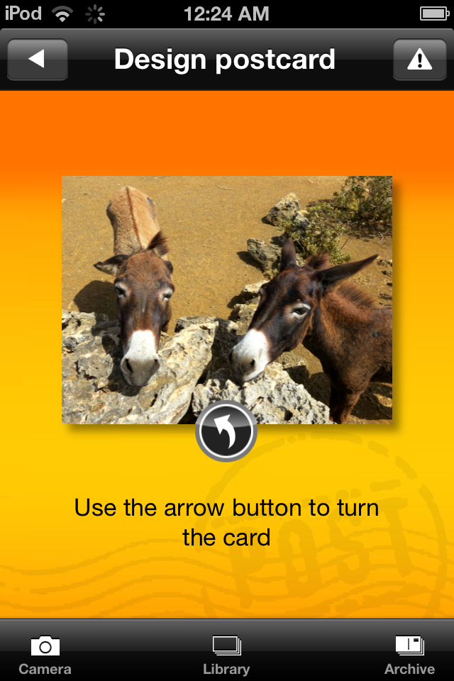
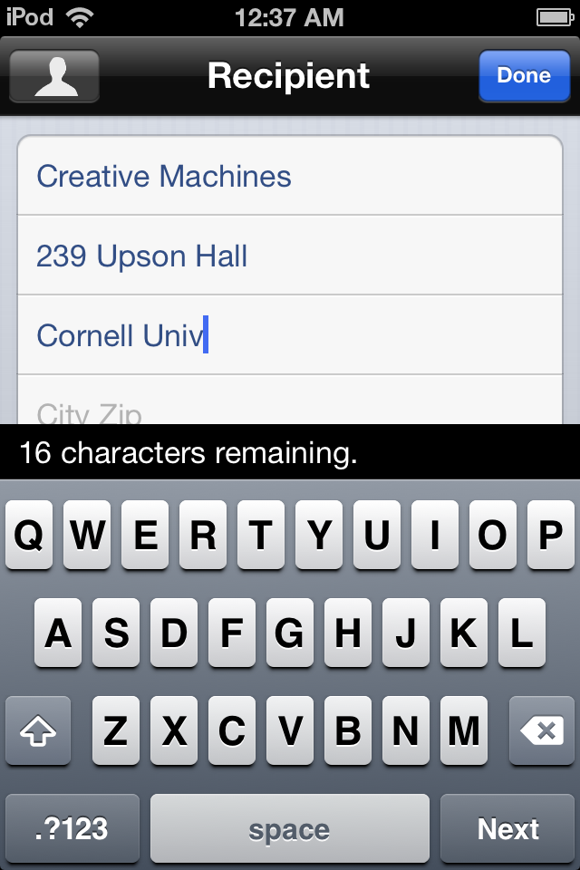

Kartensender is a smartphone-to-mailbox postcard sending service. During the launch and first few years of operation I worked as its “CTO-for-hire”, writing all server side code and managing technical contractors.
Starting from a German iPhone app, Kartensender grew to include Android, webOS, Windows Phone and web apps in several languages. Add to that tens of white labels and bags of cards sent every day.
Scroll right to see screenshots of the app in action and more info about this project.

